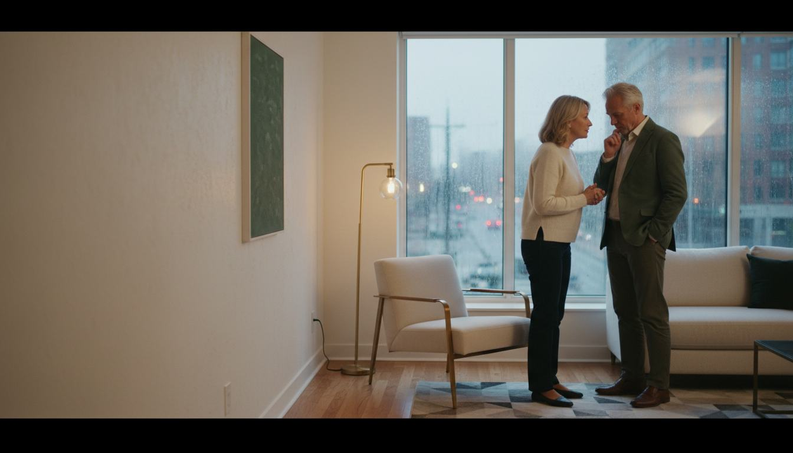

JEDNA OTÁZKA
Je to jen únava… nebo si oba všimli něčeho dalšího?
Některé změny se objeví potichu. V kratším večeru, v odloženém rozhovoru nebo v okamžiku, kdy se muž začne vyhýbat blízkosti, aniž by přesně věděl proč.
Nové video ukazuje přehlíženou souvislost, o které se většinou mluví až příliš pozdě.
ZOBRAZIT KRÁTKÉ VIDEODiskrétní redakční pohled. Bez nátlaku a bez velkých slibů.

MEZI ŘÁDKY NĚCO, O ČEM SE NEMLUVÍ SNADNOTo, co se změní potichu, může vyvolat nejvíce otázek.
VZOREC
Možná si muž nevšimne prvního signálu. Partnerka ale často pozná, že se něco změnilo, ještě před rozhovorem.
Nejde o hledání viníka ani o další seznam pravidel. Jde o jednu souvislost v každodenním rytmu, která bývá zaměněna za stres, věk nebo obyčejně špatný den.
Krátké video tuto myšlenku rozebírá citlivě a nechává hlavní vysvětlení až na chvíli, kdy člověk pochopí, proč tolik párů přehlédne stejný detail.
„Někdy je nejdůležitější otázka ta, kterou si položíme až napodruhé.“ODHALIT PŘEHLÍŽENOU SOUVISLOST
CO JE UVNITŘ?
Jedna odpověď může změnit způsob, jakým člověk čte vlastní signály.
Obálka zůstává zavřená. Stejně jako vysvětlení, které dává smysl až po zhlédnutí celé redakční reportáže.
PUSTIT CELÉ VYSVĚTLENÍReklamní upozornění: Jedná se o sponzorovaný redakční obsah. Externí video může obsahovat nabídku partnera. Na této stránce se nic nekupuje.
Tato stránka slouží pouze k obecným informačním a redakčním účelům. Neurčuje diagnózu, neposkytuje léčbu a nezaručuje žádný konkrétní osobní výsledek.